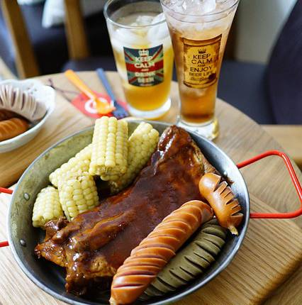

Heidrun's Brewed Sausages
Ale basted sausages, cooked in mead and smothered in mead gravy

A master viking chef will always struggle to make this dish... the first time. Getting mead from the mythical goat HEIDRUN can only be done from Valhalla, so prior to making this meal, you will need to give yourself a glorious death in battle!
Once dead, let's go about finding what we need from beyond Odin's Gates, at Valhalla!
- A cauldron of mead from the teats of Heidrun, the legendary goat.
- Venture out into the plains of the dead, and bag yourself a murderous HELLBOAR. These dangerous beasts are inhabited by the souls of the damned, so be sure to bring your best battle axe.
Now, with your legendary ingredients, let's make the finest meal a warrior could eat!
- The greatest thing about this recipe, is that all the steps can be improvised. Enjoy